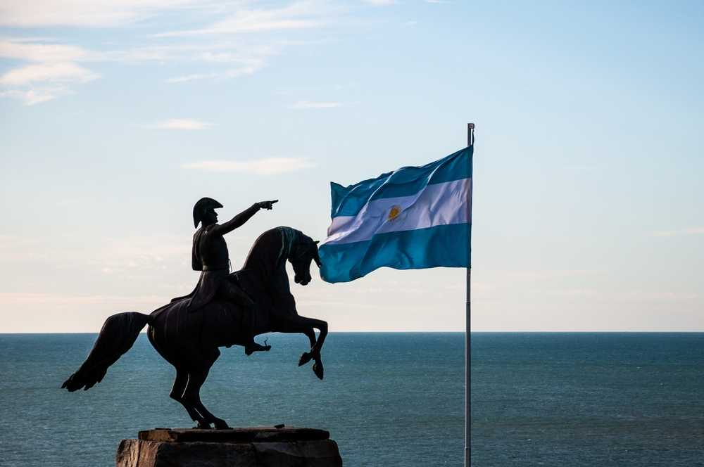

17 de Agosto - Paso a la Inmortalidad del General José de San Martín
El 17 de agosto se conmemora la muerte de José de San Martín en 1850. Figura clave en la independencia de Argentina, Chile y Perú, su legado sigue vigente en la historia nacional.
Cada 17 de agosto se recuerda el fallecimiento del General José de San Martín, el “Padre de la Patria”, en 1850 en Boulogne-sur-Mer, Francia.
San Martín fue el máximo líder militar de la independencia sudamericana. Condujo el ejército de los Andes en una de las gestas más importantes de la historia, cruzando montañas para liberar Chile y luego Perú.
Su vida fue un ejemplo de valentía, humildad y compromiso con la libertad de los pueblos. Tras su retiro, vivió en el exilio y nunca buscó honores ni recompensas. El 17 de agosto se honra su memoria con actos escolares, militares y discursos que destacan su legado como prócer continental.